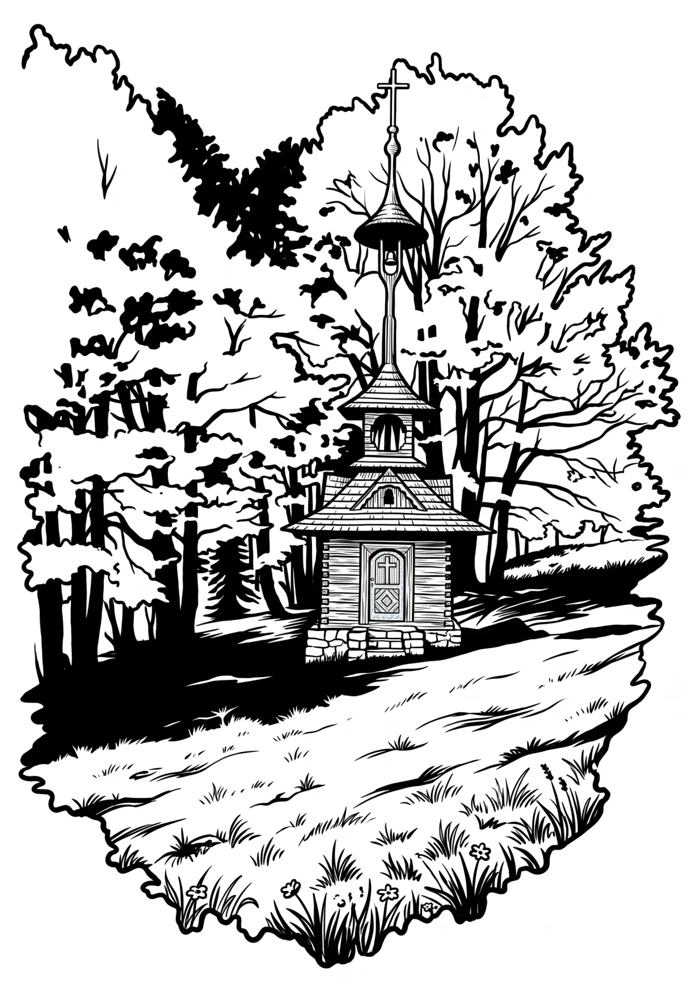

Zvonička Pustevny
Moravskoslezský kraj · 1018 m n. m.

technická památka · #099
Zvonička Pustevny je dřevěná roubená zvonice, která se nachází v horském sedle Pustevny v Moravskoslezských Beskydech na katastrálním území obce Trojanovice v okrese Nový Jičín ve Moravskoslezském kraji.